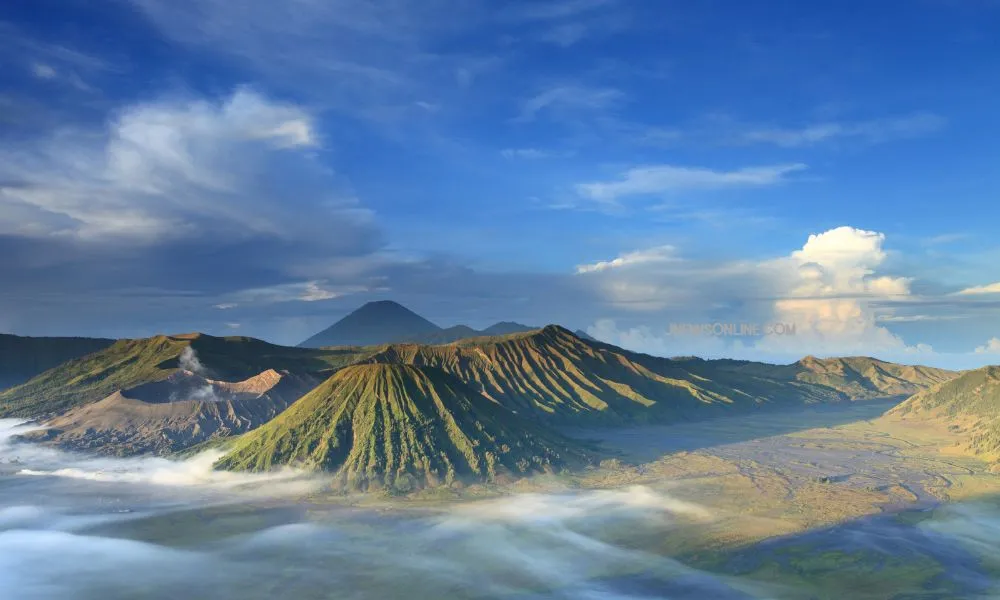
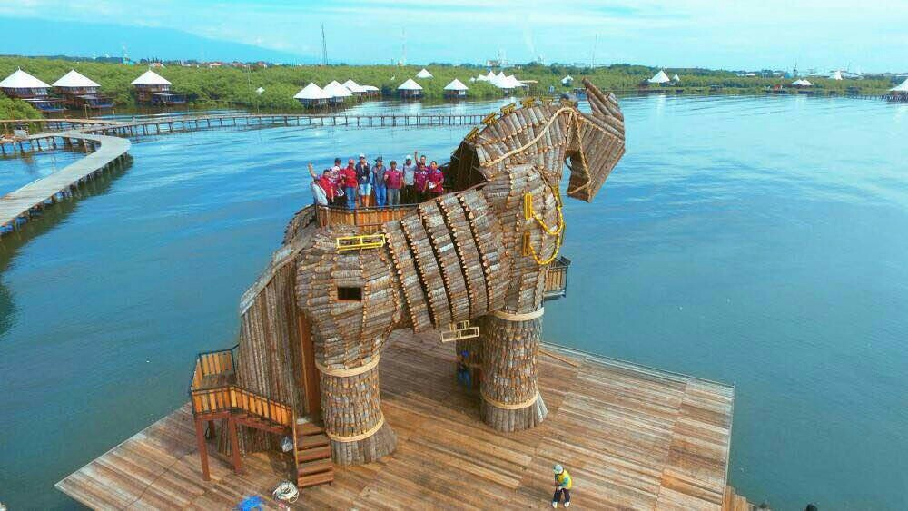
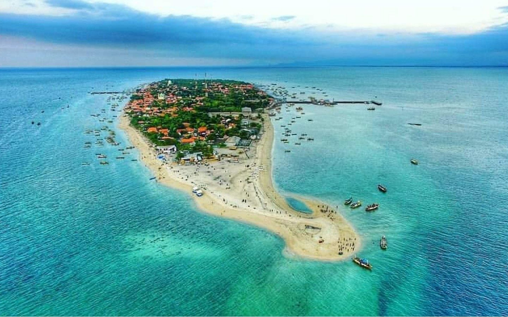
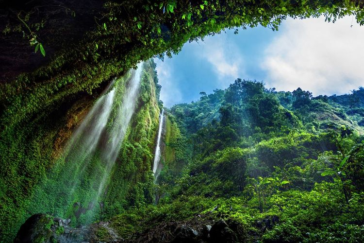
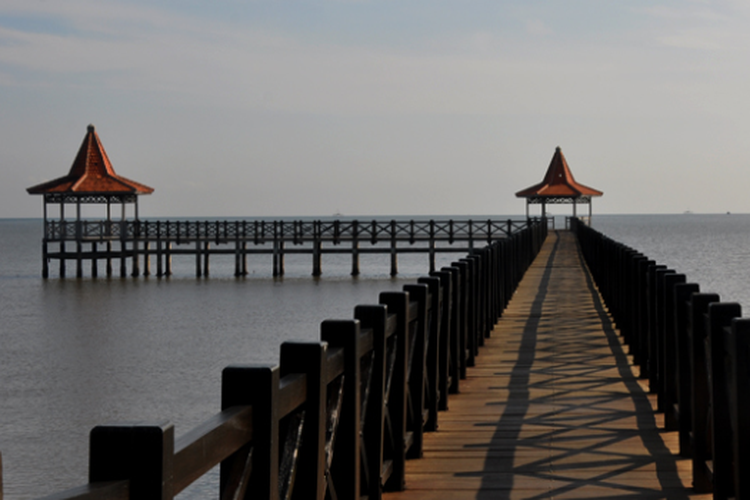
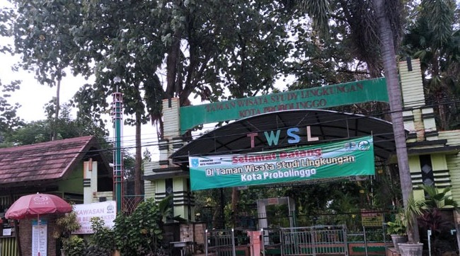

Pariwisata di Probolinggo
Rekomendasi tempat liburan di Probolinggo
1. Gunung Bromo
Gunung Bromo adalah salah satu gunung api yang masih aktif di Indonesia. Gunung yang memiliki ketinggian 2.392 meter di atas permukaan laut ini merupakan destinasi andalan Jawa Timur. Gunung Bromo berdiri gagah dikelilingi kaldera atau lautan pasir seluas 10 kilometer persegi. Gunung Bromo dinobatkan sebagai tempat yang menawarkan pemandangan matahari terbit terbaik di Pulau Jawa.
2. BeeJay Bakau Resort (BJBR)
Resort ini terletak di kawasan pantai dan hutan bakau. Selain menikmati keindahan alam, BJBR juga menawarkan berbagai aktivitas seperti bersepeda, berjalan-jalan di jembatan kayu di antara pepohonan bakau, dan menikmati restoran apung.
3. Gili Ketapang
Pulau kecil ini terletak di lepas pantai Probolinggo dan dikenal dengan keindahan bawah lautnya, terutama terumbu karang dan ikan tropis. Pulau ini cocok untuk snorkeling dan diving, menawarkan pengalaman wisata alam yang tak terlupakan. Ada berbagai penawaran paket snorkeling dengan tarif mulai Rp 100 ribu hingga Rp 500 ribu setiap orang.
4. Madakaripura Forest Park
Sempat tutup pada 2017, kini Madakaripura Forest Park sudah bisa buka kembali. Air terjun ini terletak di kawasan Taman Nasional Bromo Tengger Semeru. Madakaripura dmemiliki keunikan dengan air terjun yang dikelilingi tebing tinggi, memberikan kesan dramatis. Konon, tempat ini adalah lokasi meditasi terakhir Patih Gajah Mada dari Kerajaan Majapahit. Lokasi Madakaripura Forest Park ini ada di Desa Negororejo, Kecamatan Lumbang, Kabupaten Probolinggo, Jawa Timur. Tempat wisata Probolinggo ini pun masih satu kawasan dengan air terjun Madakaripura, dan berjarak sekitar 400 meter dari air terjun.
5. Danau Ranu Agung

Wisata Probolinggo lainnya yang tidak kalah terkenal yaitu Danau Ranu Agung. Tempat ini menyajikan pemandangan danau yang tenang dan indah, serta menjadi tempat favorit untuk berkemah dan menikmati suasana alam yang damai. Danau ini populer karena memiliki pemandangan alam indah dengan tebing-tebing tinggi yang ditumbuhi berbagai tumbuhan hijau. Menariknya, tebing-tebing di danau ini berupa bebatuan yang panjangnya mencapai kurang lebih 70 meter sehingga sekilas mirip pohon beringin. Selain itu, air di danau ini pun terbilang jernih. Bahkan, saat kemarau, airnya juga tidak surut.
6. Pantai Bentar
Pantai Bentar berada di sebelah utara Probolinggo dan menjadi lokasi favorit untuk menikmati pemandangan laut yang indah. Terdapat juga jembatan panjang yang menghubungkan pantai dengan area lebih dalam di lautan, ideal untuk foto dan menikmati angin laut.
7. Taman Wisata Studi Lingkungan (TWSL)
TWSL adalah taman edukasi yang menyajikan kebun binatang mini dan taman bermain. Cocok untuk wisata keluarga, tempat ini menggabungkan unsur rekreasi dan edukasi dengan berbagai satwa yang bisa dipelajari oleh pengunjung.